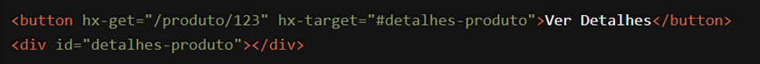

O atributo `hx-get` do HTMX é uma verdadeira revolução na maneira como desenvolvemos para a web. Ele traz simplicidade, eficiência e uma nova dimensão de interatividade que transforma qualquer projeto em algo excepcional.
Imagine poder carregar conteúdo de uma URL específica com apenas uma linha de código HTML. Parece mágico, não é? E é exatamente isso que `hx-get` faz. Com ele, você pode fazer requisições HTTP GET diretamente a partir de elementos HTML, sem ter que escrever uma única linha de JavaScript adicional. Isso não só economiza tempo, mas também torna seu código mais limpo, legível e fácil de manter.
Vamos dar um exemplo prático: você tem uma página de produtos e quer mostrar os detalhes de um produto quando o usuário clica em um botão. Com `hx-get`, isso é simples e direto. Basta adicionar alguns atributos ao seu HTML e, pronto, você tem uma interface dinâmica e responsiva.

Quando o usuário clica no botão "Ver Detalhes", o HTMX faz uma requisição GET para a URL especificada e insere a resposta no elemento alvo, sem recarregar a página inteira. Isso proporciona uma experiência de usuário mais fluida e rápida, mantendo a interatividade em um nível elevado.
Mas a magia do `hx-get` não para por aí. Ele é incrivelmente versátil e pode ser usado em uma variedade de contextos. Seja carregando listas de dados, atualizando partes específicas da interface ou integrando com APIs externas, `hx-get` é a ferramenta que você precisa para elevar o nível do seu desenvolvimento web.
A verdadeira beleza do `hx-get` está em sua capacidade de simplificar tarefas complexas. Ao remover a necessidade de escrever JavaScript para cada interação, ele permite que você foque no que realmente importa: criar experiências de usuário excepcionais. E, ao mesmo tempo, melhora a performance da sua aplicação, garantindo que apenas o conteúdo necessário seja carregado e atualizado.
Além disso, `hx-get` facilita a comunicação com o backend, tornando a integração com servidores e APIs uma tarefa trivial. Com ele, você pode construir aplicações mais robustas e escaláveis, tudo isso com menos código e menos complexidade.
Então, se você está procurando uma maneira de tornar suas páginas web mais interativas, rápidas e fáceis de manter, o atributo `hx-get` do HTMX é a resposta. Ele não é apenas uma ferramenta; é uma forma de pensar diferente sobre como construímos para a web. E uma vez que você começar a usar, você vai se perguntar como conseguiu viver sem ele.
Acredite no poder da simplicidade. Acredite no HTMX e no `hx-get`. Permita-se explorar novas possibilidades e leve seus projetos para o próximo nível. Você tem nas mãos uma ferramenta incrível, e o único limite é a sua imaginação. Vamos juntos transformar o futuro do desenvolvimento web!